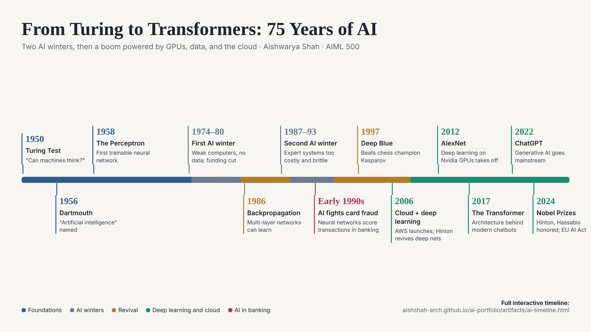

Artifact 2
From Turing to Transformers: An Interactive History of Artificial Intelligence
← All artifactsArtifact Visual

Introduction
This artifact is a visual history of artificial intelligence, from Alan Turing's 1950 question "Can machines think?" to the 2024 Nobel Prizes awarded for AI research. I built it around one idea: AI did not grow in a straight line. Its history includes bursts of optimism, two long "AI winters" when funding dried up, and a modern boom powered as much by GPUs, data, and cloud computing as by new algorithms.
I chose it as my second artifact because it shows a different skill from my first. Where Artifact 1 shows how I build and test an AI tool, this one shows how I research a complex subject, verify facts against sources, and turn them into a clear visual story for people who do not have time to read the history themselves.
Description
The artifact has two parts, designed for two ways of reading:
- A one-screen overview with 13 key milestones on a single color-coded line, for readers who want the big picture in under a minute.
- A full interactive timeline with 25 milestones, each with a plain-language description and the key people and companies involved. It works on desktop and mobile.
Both versions are organized into six eras and use five colors: foundations, AI winters, revival, the deep learning and cloud era, and AI in banking. The two AI winters (1974 to 1980 and 1987 to 1993) are shaded and explain both the causes and the impact of each downturn. The full version also includes a callout on the growth of training compute and a section called "AI in Banking: Then and Now" that compares rule-based and AI-based fraud detection.
Objective
This artifact began as the Workshop 1 assignment in AIML 500: Machine Learning Fundamentals, which asked students to research and build a digital timeline of AI's key milestones, influential figures, and turning points. Understanding where machine learning came from is the foundation for the rest of the course.
The objective was to explain how AI evolved, why progress stalled twice, and what finally made the modern boom possible, in a format a non-technical reader could understand quickly. A second objective was to show that today's AI rests on decades-old ideas. Neural networks date back to the 1958 Perceptron, but they only became practical once computing power and data caught up. For professionals in fields like banking, the goal was also to show that AI was solving real business problems long before generative AI made headlines.
Process
- Research. I studied the three course resources: a documentary on the history of AI, an IEEE Computer Society article on the evolution from symbolic AI to neural networks (Bhat, 2025), and Our World in Data's history of AI (Roser, 2022). I checked dates and claims against these sources and against primary research, such as the study on compute trends by Sevilla et al. (2022).
- Selecting milestones. I chose events that explain turning points rather than listing every achievement, and grouped them into six eras so the boom-and-bust pattern would be visible at a glance.
- Adding my own lens. I added a separate color for AI in banking, my field, including early neural network fraud detection in the 1990s.
- Designing for two audiences. My first version was a single long page. When I saw it as an image, it was too long and crowded to read in a discussion post, so I created a one-screen overview for quick reading and kept the detailed page for deeper exploration.
- Revising from feedback. After sharing the timeline with my class, I added the "AI in Banking: Then and Now" section in response to my instructor's and classmates' feedback.
Feedback that shaped the final version
| Source | Feedback | What I changed |
|---|---|---|
| Instructor | The timeline captures the major milestones and highlights how computing power, data availability, and research innovation drove AI's growth. | Kept the compute and data story as the central thread of the artifact. |
| Classmate | Show both the benefit and the cost of AI in banking, such as fraud prevented versus a legitimate purchase blocked. | Added a benefit-and-cost comparison to the new banking section. |
| Classmate | Compare traditional fraud detection systems with modern AI approaches. | Added a side-by-side table of rule-based and AI-based fraud detection. |
| Classmate | How do banks balance fraud detection with incorrect decisions, privacy, and bias? | Explained how banks match the response to the risk and monitor false alarms across customer groups. |
Tools and Technologies Used
- HTML and CSS: the interactive timeline is a responsive web page, color-coded by era and readable on mobile.
- GitHub Pages: hosts the timeline and this portfolio.
- Course resources and primary sources: the IEEE Computer Society, Our World in Data, and published research used to verify each milestone.
- Claude (Anthropic): used to help research milestones and design the layout. I selected the focus, added the banking lens, verified facts against the sources, and made the revisions based on feedback.
Value Proposition
If you need to understand where AI came from and why it is booming now, this timeline gives you 75 years of history in under five minutes, with the two AI winters explained so you can recognize the warning signs of hype today.
For leaders evaluating AI investments, the history offers a practical lesson: progress stalled twice when promises outran what the technology and data could deliver. For banking and compliance professionals, the "Then and Now" section shows how fraud detection evolved from fixed rules to learning systems, and the tradeoffs that come with that shift.
Unique Value
Most AI timelines focus on famous research breakthroughs and consumer products like ChatGPT. This one adds a banking thread, drawn from my eight years in data and analytics, including propensity modeling at JPMorgan Chase. It shows that machine learning was quietly protecting bank customers from fraud in the early 1990s, decades before generative AI, and explains the real tradeoff banks manage every day between catching fraud and inconveniencing legitimate customers. That perspective connects AI history to decisions working professionals actually face.
Relevance
Organizations are investing heavily in AI today, and the AI winters are a reminder of what happens when expectations outrun results. Understanding that history helps leaders set realistic goals for AI projects. The timeline also highlights a trend that still shapes the field: training compute for AI systems has gone from doubling roughly every 20 months to about every 6 months since the deep learning era began (Sevilla et al., 2022). As an aspiring AI engineer, I see this history as practical knowledge. It explains why data and infrastructure matter as much as algorithms, and why responsible use of AI in fields like banking depends on understanding both what the technology can do and where it can fail.
References
Bhat, A. K. (2025, March 11). The evolution of AI: From foundations to future prospects. IEEE Computer Society. https://www.computer.org/publications/tech-news/research/evolution-of-ai
Putchuon. (2024, May 30). The entire history of artificial intelligence (Last 100 years) [Video]. YouTube. https://www.youtube.com/watch?v=mSd9nmPM7Vg
Roser, M. (2022). The brief history of artificial intelligence. Our World in Data. https://ourworldindata.org/brief-history-of-ai
Sevilla, J., Heim, L., Ho, A., Besiroglu, T., Hobbhahn, M., & Villalobos, P. (2022). Compute trends across three eras of machine learning. arXiv. https://arxiv.org/abs/2202.05924